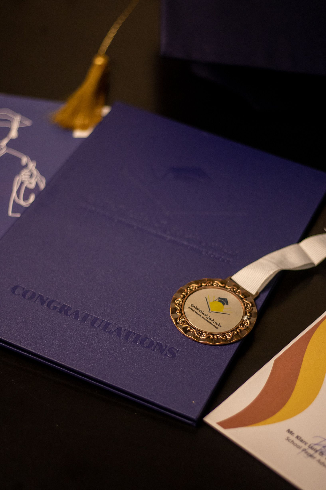
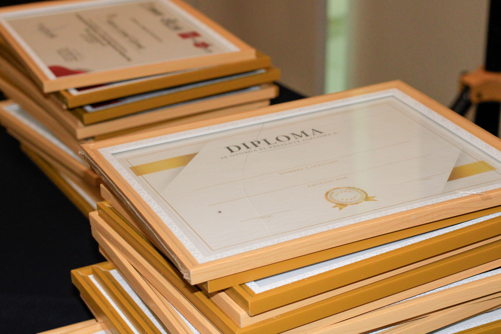

Quién Soy

Soy traductora independiente especializada en inglés y francés. Mi misión es ayudar a profesionales, empresas y estudiantes a comunicar sus ideas de manera clara y precisa en diferentes idiomas.
Con más de 8 años de experiencia, ofrezco un servicio confiable, puntual y adaptado a las necesidades de cada cliente.
Servicios
- Traducción académica.
- Traducción empresarial.
- Traducción de páginas web.
- Corrección y edición de textos.
Trayectoria
He trabajado con clientes de distintos sectores, incluyendo marketing, educación y tecnología.
Mi formación incluye una Licenciatura en Traducción y cursos de especialización en terminología técnica.
Certificaciones


Formación continua en traducción académica, empresarial y terminología especializada.